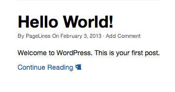

PageLines DMS Documentation
A powerful front-end drag and drop design management system for fast and easy web development.
Hooks
Hooks in PageLines DMS essentially allow you to manipulate or insert code without editing core files. There are two types of hook, these are actions and filters.
Action Hooks
Action Hooks allow you to insert additional code and, there by, customise the code to do additional functions at designated points in PageLines Framework.
Filter Hooks
Filter Hooks are used to manipulate code output and return a variable. An example of this would be to add a text, a link or even an image to the end of the content on your blog posts or pages.
To put it more elegantly, you can change things that are hard-coded with filters, and you can add things using actions.
For more information on what hook actions and filters are, see WordPress documentation Plugin API. There is also an excellent article by WP Candy on hooks here.
Using Hooks
In order to use a hook to add or manipulate code, you need add it to the functions.php file. This can be found in either the base child theme folder or the customize plugin, depending on the Customization Method of your choice.
| Customization Method | Hook Support |
|---|---|
| In DMS | |
| Child theme | |
| Customize Plugin |
Using Hooks
The below code is a starting point for your hook.
add_action('action_name', 'your_function_name');
function your_function_name() {
// Add your code here...
}
Using filter hooks
The below code is a starting point for your filter.
add_filter('filter_name', 'your_function_name');
function your_function_name( $variable ) {
// Add your code here...
return $variable;
}
Hook Examples
Below are a few simple examples of actions and filters. These examples are displayed for their theoretical value, and can either be used on their own or as a starting point for your own hooks.
Action Hook Examples
HTML via Hook
The example below is a basic hook to add HTML code.
add_action('action_name', 'your_function_name');
function your_function_name() {
echo '<p>Hello World!</p>';
}
You can also use the following instead, this example displays how to break in and out of PHP.
add_action('action_name', 'your_function_name');
function your_function_name() { ?>
<p>Hello World!</p>
<?php
}
Remove Fixed Navigation Logo
This example removes the logo image and url from the Fixed Navigation.
add_action( 'navbar_brand', 'remove_fixed_navbar_logo' );
function remove_fixed_navbar_logo(){
return '';
}
Shortcode inside a hook
This demonstrates how to use a shortcode inside a hook, simply replace [your_shortcode] with the shortcode you wish to use.
add_action( 'action_name', 'your_function_name' );
function your_function_name(){
echo do_shortcode( '[your_shortcode]' );
}
Filter Hook Examples
Insert Content into the Continue Reading Link
This filter allows you to insert content to the Continue Reading link. For this example, we have used Font Awesome to add the icon beer.
add_filter( 'continue_reading_link_text', 'add_my_continue' );
function add_my_continue() {
return 'Continue Reading <i class="icon-beer"></i>';
}

Note: In the example code above, you can see that we have used the 'Continue Reading <i class="icon-beer"></i>'; you’re free to change this to whatever you like such as, 'Read Full Article <i class="icon-arrow-right"></i>';.
Insert a Class Into Continue Reading Link
In this filter, we demonstrates how we can insert a class, for the following example we have used the btn btn-success classes to give us a green styled button.
add_filter( 'continue_reading_link', 'btn_reading_link' );
function btn_reading_link( $link ) {
$link = str_replace( 'class="', 'class="btn btn-success ', $link );
return $link;
}

Note: In the example code above, you can see that we have used the 'class="btn btn-success ', you’re free to change this to whatever you like, even adding your own custom classes for unique styling.
Add signature to posts
This example which uses the_content filter allows you to insert a simple signature at the base of your posts.
add_filter( 'the_content', 'add_my_signature' );
function add_my_signature( $content ){
if( ! is_single() ) // if were not on a post/page just return the content.
return $content;
$sig = '<br />Thanks for reading!'; // Add a sig to the post/page content and return.
return $content . $sig;
}
Please remember that these examples are displayed for their theoretical value. Although they can be used, these have been added as a starting point for your own hooks creations.